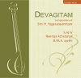

Compositions of Sri H. Yoganarasimham
Sri H. Yoganarasimham has composed 35 compositions in all. These have been made available in two forms; in this website for download and audio CDs.
The following songs are available for free download.
- maguva - tānavarṇa
rāga : amṛtavarshiṇi - tāḷa : ādi(3.8 MB) - bhaja rē mānasa - svarajati
rāga : māyāmāḷavagauḷa - tāḷa : caturasra rūpaka(8.2 MB) - prasannakamalēśam - kṛti
rāga : śaṅkarābharaṇa - tāḷa : caturasra rūpaka(15.9 MB) - maracitivō - kṛti
rāga : latāntapriya - tāḷa : ādi(6.8 MB) - rājabhōga - kṛti
rāga : gaurimanōhari - tāḷa : ādi(11 MB) - koḷalelli - rāgamālikegaḷu
rāga : rāgamālike - tāḷa : ādi(7.1 MB) - śṛṅgāraśēkhara - pada
rāga : nīlāmbari - tāḷa : caturasra ēka(6.0 MB) - tarana nādiri diri - tillāna
rāga : sunādavinōdini - tāḷa : ādi - tryasra naḍe(3.5 MB) - nijada nija - kṛti
rāga : bhānudhanyāsi - tāḷa : khaṇḍa chāpu(2.8 MB) - pāmarāham - tānavarṇa
rāga : dharmavati - tāḷa : ādi(3.7 MB) - vanamālini - tānavarṇa
rāga : dvijāvanti - tāḷa : ādi(4.4 MB) - manavini vinumā - jāvaḷi
rāga : valaji - tāḷa : caturasra rūpaka(3.4 MB) - nādabrahmapurē - kṛti
rāga : praṇavākāri - tāḷa : khaṇḍatripuṭa(3.6 MB) - pañcāṅga nōḍi bandirā - jāvaḷi
rāga : ḳamās - tāḷa : caturasra rūpaka(3.0 MB) - dhīm tadare dani - tillāna
rāga : śahana - tāḷa : ādi(3.4 MB) - tana nā diri diri dīm - tillāna
rāga : nāṭakurañji - tāḷa : ādi(3.6 MB) - namō arbhakēbhyaha - arbhakagītam
rāgamālike - tāḷa : caturasra ēkatāḷa(2.3 MB)
The following songs are available in CDs

A set of two compact discs, sung by
Smt. Neeraja Achuta Rao (Daughter of Sri H. Yoganarasimham)
Dr. M. A. Jyothi (Grand Daughter of Sri H. Yoganarasimham)
CD 1
- sundara dēva - tānavarṇa
rāga : hindōḷa - tāḷa : ādi - ēkadantamupāsmahē - kṛti
rāga : bēgaḍe - tāḷa : ādi - kō vā rāgō - kṛti
rāga : valaji - tāḷa : miśra jhampe - sujanacaritam - kṛti
rāga : mukhāri - tāḷa : ādi - kāpāḍade - kṛti
rāga : gaganamōhini - tāḷa : ādi - nādavarasuśōbhitam - kṛti
rāga : nādavarāngiṇi - tāḷa : khaṇḍa tripuṭa - candraśēkharabhārati - kṛti
rāga : kāmavardhani - tāḷa : ādi - moreyiṭṭarēnu - kṛti
rāga : rēvati - tāḷa : ḳhaṇḍa chāpu - tōm tana dira na - tillāna
rāga : ābhōgi - tāḷa : khaṇḍatripuṭa
CD 2
- kamalā - tānavarṇa
rāga : mōhana - tāḷa : ādi - śāntirupāsyatām - kṛti
rāga : latāntapriya - tāḷa : ādi - sadā sāraṅganayanē - kṛti
rāga : rañjani - tāḷa : ādi - ninu miñcina - kṛti
rāga : kōlāhala - tāḷa : miśra chāpu - saphalam jīvitam - kṛti
rāga : kuntalakusumāvaḷi - tāḷa : ādi - hēmātīra - kṛti
rāga : kāmbhōji - tāḷa : khaṇḍatripuṭa - tām nādiri dānī - tillāna
rāga : kalyāṇi - tāḷa : ādi - jaya jaya bhārata - rāshṭradvajavandana gītam
rāgamālike - tāḷa : ēkatāḷa - narasimhāya - divyanāma
rāga : madhyamāvati - tāḷa : ādi
Audio CDs are available at all leading music stores in Bangalore. You may also write to devagitam@gmail.com to purchase them.